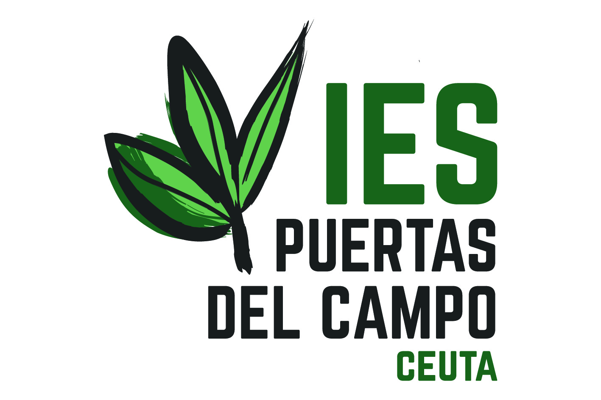
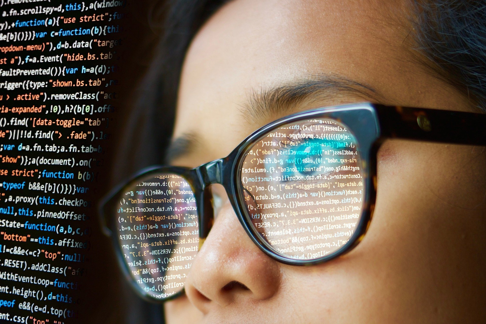

Ciclos Formativos de Informática
¿Te apasiona la Informática? Si es así, te invitamos a descubrir los Ciclos Formativos que ofertamos en nuestro Centro. Sin duda podrás encontrar el que más se adapte a tus intereses y comenzar a prepararte para un brillante futuro profesional. Haz clic en el menú de arriba para saber más.
Sistemas Microinformáticos y Redes

El Ciclo Formativo de Grado Medio en Sistemas Microinformáticos y Redes sirve para formar a profesionales expertos en redes informáticas. Podrás por ejemplo diagnosticar disfunciones en sistemas microinformáticos y redes mediante pruebas funcionales. También instalar, configurar y mantener servicios multiusuario, aplicaciones y dispositivos compartidos en un entorno de red local.
Administración de Sistemas Informáticos en Red

El Ciclo Formativo de Grado Superior en Administración de Sistemas Informáticos en Red es muy completo; podrás trabajar como administrador de sistemas, responsable de Informática, técnico en servicios de Internet, técnico de telecomunicaciones, técnico de mensajería electrónica, técnico en teleasistencia, personal de apoyo y soporte técnico, técnico en administración de base de datos, técnico de redes, técnico en entornos web y supervisor de sistemas.
Desarrollo de Aplicaciones Web

El Ciclo Formativo Superior en Desarrollo de Aplicaciones Web es la formación que estás buscando si quieres convertirte en programador o desarrollador web. Por ejemplo, un técnico en Desarrollo de Aplicaciones Web puede acabar trabajando como diseñador web, técnico en SEO, especialista en analítica web o desarrollador front end, back end o full stack. Esta es una de las especialidades que prepara a los alumnos para trabajar en las profesiones más nuevas. Hay múltiples salidas laborales.
Desarrollo de Aplicaciones Multiplataforma

En el Ciclo Formativo Superior en Desarrollo de Aplicaciones Multiplataforma se aprende a programar todo tipo de aplicaciones. Los alumnos se forman para ser capaces de dar respuesta a cualquier necesidad, ya sea en PC o móvil. El mundo digital avanza deprisa, las plataformas se optimizan y aparecen nuevos dispositivos. Gracias a la versatilidad del Ciclo, los técnicos pueden trabajar en diferentes campos y plataformas y ofrecer soluciones realmente innovadoras.
Curso de Ciberseguridad
El Curso de Especialización en Ciberseguridad en Entornos de las Tecnologías de la Información, al que podrás acceder después de finalizar cualquier Ciclo de Grado Superior de la Familia Profesional de Informática, es una reciente novedad en nuestro Centro. En él aprenderás todas las tecnologías relacionadas con la Ciberseguridad, como el análisis forense, el hacking ético o el bastionado de sistemas. La ciberseguridad es un sector en alza, por lo que este curso es un gran complemento para tu formación.